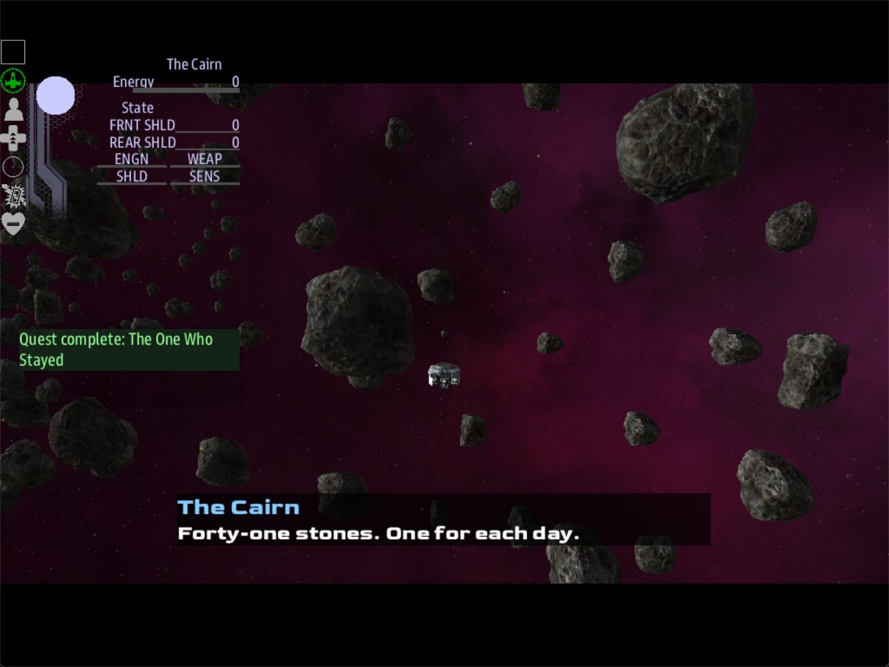

Class 4, Lecture 6 - Clues, side stories and cutscenes¶
What you will have at the end¶
The Hollow keeps one secret for a crew that listens.
- A clue. A plate on the ring plays a recording as the ship flies through it: five names. A crew that logs the names is offered one more answer at the altar.
- A side story. That answer puts a side room on the map and starts a quest of its own, The One Who Stayed. A crew that shuts the first recording off never hears of it.
- A cutscene. When the ship finds the cairn in the side room, the main screen leaves the ship for ten seconds: first the altar, then the cairn, with a line of words under each.

The main screen during the cutscene: "The Cairn - Forty-one stones. One for each day."You will add to mission.amd. For the cutscene you will also paste one card into
story.mast: one line and one block.
You do not need Lecture 5 for this page. Nothing here is picked up. If you have done it,
type today's steps onto the file you have: they are the same. You do not need Class 3
either: the two words it shares with this page, learn and learned, are taught again
here.
The video¶
About 8 minutes. Subtitles are available in the player.
Before you start¶
MyRuinas Lecture 4 left it: The Hollow, with The Ring, The Way In, The Altar and The Niche, Surveyor Rook, the beat Marker One, and the scenes Rook at the Altar and The Rest of It.mission.amdis 199 lines long. If you did Lecture 4's exercise, your file is longer and the two line numbers lint prints in Step 7 will be higher. Nothing else changes.sbs lint MyRuinsaysclean.- You have done Class 1, Lecture 11. You have pasted a card at the end of
story.mast. - You have done Class 2, Lecture 4. You have written an answer that starts a quest.
- VS Code with the mission folder open, a command prompt open in
C:\Cosmos\data\missions, and the game closed.
You start the game the way you did in Lecture 4. The server's own window is the main screen:
Step 1 - What a clue is¶
A clue is something the crew learns in one place that changes what happens in another. For a ship in a ruin, a clue can open four things.
| The clue opens | Where the crew learns it, you write | Where it pays off, you write | From |
|---|---|---|---|
| A place | ; reveal niche on an answer |
Nothing. The place appears on the map | Lecture 4 |
| An answer | ; learn names on an answer |
if learned >= 1 on the answer it opens |
Today, Steps 2 and 3 |
| A line | ; learn names on an answer |
%{learned >= 1} in front of the take |
Today, the exercise |
| A quest | ; accepts stayed on an answer |
Nothing. The quest starts | Class 2, Lecture 4, and Step 5 |
learn and learned are the new pair. Four rules, and all four matter.
learn writes one word down. ; learn names adds the word names to what this
ship's crew knows. The word is yours. Writing the same word down twice counts once.
learned counts, and it can also ask for one word. if learned >= 1 means: they know
at least one thing. if learned names means: they know that one word. The word by itself,
if names, is never true.
Every word learned in a call goes on one list, kept for the whole game. A crew member who leaves the ship in a suit writes on a second list, which belongs to the ruin they are in. A count asked in a call counts the first list. A count asked by somebody in a suit counts only the ruin's. A word asked for by name is found on either. Suits are Lecture 8, and Lecture 10 uses both lists.
The count is read when the crew opens the scene. The game decides which answers to offer at the moment a scene is first opened, and it does not look again. A crew that opens a call, sees two answers, presses Back, learns something and comes back, sees the same two answers.
That last rule decides how you build a chain. Put the clue where the crew meets it before the call it opens.
Step 2 - The first clue¶
The ring you stood across the first passage in Lecture 3 is the one thing every ship flies through. So the first clue goes there. It needs three records: a place, a beat and a scene. All three are Lecture 4.
The place. Find The Niche in the Relics section. Leave one blank line below its last line, and type:
### [The Ring Plate](plate)
---
Relic: hollow
Point: 1400, 0, 0
Roles: plate
---
A metal plate bolted to the ring. The first survey left it.
The three numbers are The Ring's own. A place and a prop can stand on the same spot.
The beat. Find Marker One in the Quests section. Leave one blank line below its description, and type:
### [Marker Zero](marker_zero)
---
Beat
Starts when: reach plate 500
Action:
- rook hails rook_plate
---
The ship flies through the ring, and the plate on it starts to play.
The scene. Go to the Dialogue section. Leave one blank line below the last answer of The Rest of It, and type:
### [Rook at the Ring](rook_plate)
---
Speaker: rook
When: hail
Title: A recording at the ring
---
% Marker zero. Five of us went in: Rook, Dace, Imre, Sato and Vell. The markers inside answer to our names.
- [Log the names.]() ; learn names
- [Shut it off.]()
One thing is new: ; learn names on the first answer.
| Part | What it means |
|---|---|
; |
Everything after it is what the answer does |
learn |
Write a word down for this crew |
names |
The word. One word of your own, in small letters |
The crew does not see the word. They see the answer, Log the names.
Step 3 - The clue opens an answer¶
Find Rook at the Altar. Add one answer between the two it has:
- [Play the rest.](rook_more)
- [Play the entry keyed to Dace.](rook_dace) if learned >= 1
- [Shut it off.]()
| Part | What it means |
|---|---|
(rook_dace) |
The scene this answer leads to. You type it next |
if |
Offer this answer only when what follows is true |
learned >= 1 |
The crew has written down at least one word |
The if goes after the round brackets and before any ;. A crew that has learned nothing
sees two answers. A crew that logged the names sees three.
Now the scene it leads to. Leave one blank line below the last answer of Rook at the Ring, and type:
### [The Entry for Dace](rook_dace)
---
Speaker: rook
---
% Dace did not come out with us. We built her a cairn in the side room, off the Nave. Forty-one stones.
- [Mark the side room.](rook_more)
Its one answer leads on to The Rest of It, so a crew that takes the side entry still hears the main recording, and can still mark the Gallery.
A call can offer four answers at most. Rook at the Altar now has three.
Step 4 - A side room, and the place in it¶
The entry talks about a side room. Build it. Find The Ring Plate, the record you typed in Step 2. Leave one blank line below its last line, and type:
### [The Crypt](crypt)
---
Relic: hollow
Chamber: 5200, 0, 0, 600
Passage to: nave 250
---
A small side room off the Nave. The first survey's notes do not mention it.
### [The Cairn](cairn)
---
Relic: hollow
Point: 5200, 0, 0
Roles: cairn
Hidden: yes
Dress: plain_asteroid_9 0.4
---
A pile of stones in the middle of the Crypt.
The room is Lecture 2. The place is Lecture 3: a point, a role, and a shape standing on it. The Crypt is straight across The Nave from the tunnel the ship comes in by.
Now make the answer show the place. In The Entry for Dace, add to the answer:
reveal wants the key of a place: cairn, not crypt. A room is not a place.
An answer can lead on and do something at the same time. This one goes to The Rest of It, and it puts The Cairn on the map.
Step 5 - The side story¶
A side story is a quest that is not part of the main story. Nothing waits for it, and the game can be finished without it.
Find Marker Zero in the Quests section. Leave one blank line below its description, and type:
### [The One Who Stayed](stayed)
---
Scope: shared
Starts when: revealed
Objective: Find the cairn in the side room off The Nave
Done when: reach cairn 400
---
Five surveyors went into The Hollow. Four came out.
| Surveyor | Came out |
|---|---|
| Rook, who led the survey | Yes |
| Imre, Sato and Vell | Yes |
| Dace | No |
Rook says they built Dace a cairn in a side room off The Nave. Nobody has stood in that room since.
| Line | What it means |
|---|---|
### |
Three hashes: a quest of its own. It is not a step of anything |
Starts when: revealed |
Asleep, and out of the quest list, until something starts it |
Done when: reach cairn 400 |
Finished when a ship is within 400 of the place that wears the role cairn |
| The lines with upright bars between the words | A table in the quest list, as in Class 1, Lecture 11: a header row, a row of dashes, then one row per line. The crew sees who came out at a glance |
This quest is only seen once the crew has heard the names at the ring, so its table can use them. Leave a blank line above the table and below it.
Then let the answer start it. In The Entry for Dace:
Two things after the ;, with a comma between them. accepts is from Class 2, Lecture 4:
it starts a quest that is waiting. stayed is the quest's key.
That is the whole chain:
| Where | What the crew does | What it opens |
|---|---|---|
| The ring | Logs the names | One more answer at the altar |
| The altar | Plays the entry for Dace, marks the side room | The Cairn on the map, and the side story |
| The Crypt | Flies to the cairn | The side story is finished |
The other kind of side story¶
Storm's Beacon has a section called Side Stories in every ruin file. Those are a different thing: each one belongs to one person, not to the ship.
### [Still Pinging](sink_pinging)
---
For: comms
State: active
Done when: signal recorder_taken
Leads to: at_near, sink_wreck
Pays: 80 credits
---
Something in the murk is still calling for help. Bring it home.
| A side story for the ship | A side story for one person | |
|---|---|---|
| Where you write it | The Quests section | A section of its own, ## [Side Stories](side_stories) |
| What says whose it is | Nothing. It is everybody's | For: and a job, such as For: comms |
| Who is handed it | The ship, when an answer says accepts |
A crew member, when they leave the ship |
| Where it is read | The quest list on any console | That person's handheld |
| You can play it | Today | Once a crew member can suit up: Lecture 8, and Lecture 10's exercise |
A story for one person is handed over when a crew member with that job goes out to the ruin in a suit, and it starts at that moment. The game does the handing over itself, for any ruin that has a Side Stories section in its file. Suits are Lecture 8, so leave that section until then. Lecture 10 has one for you to type.
Step 6 - The cutscene: what you write¶
A cutscene takes the main screen away from the ship for a few seconds and shows the crew something. You write it as a list of shots.
Go to the very end of mission.amd. Leave two blank lines, and type:
// ---- Cutscenes. What the main screen shows at a moment in the story.
## [Cutscenes](cutscenes)
### [At the Cairn](cairn_scene)
---
Letterbox: yes
---
Played when the crew finds the cairn.
### [The count](cairn_shot_1)
---
Cutscene: cairn_scene
Subject: altar
Framing: close
Seconds: 4
Overlay: lower_third
Name: The Altar
---
The tally on the rim stops at forty-one.
### [The stones](cairn_shot_2)
---
Cutscene: cairn_scene
Subject: cairn
Framing: wide, close
Seconds: 6
Overlay: lower_third
Name: The Cairn
---
Forty-one stones. One for each day.
The first record is the cutscene itself. The other two are its shots, and they play in the order you wrote them.
| Line | What it means |
|---|---|
## [Cutscenes](cutscenes) |
A section of its own. The key in round brackets must be cutscenes |
### [At the Cairn](cairn_scene) |
The cutscene. Its key, cairn_scene, is the word everything else points at |
Letterbox: yes |
Black bars across the top and bottom while it plays. no leaves them off |
Cutscene: cairn_scene |
This record is a shot, and this is the cutscene it belongs to |
Subject: altar |
What the camera looks at. It is a role, the same word you write after reach |
Framing: close |
How near the camera sits: close, medium or wide. For a place in a ruin those are 540, 990 and 1440 from it |
Framing: wide, close |
Two words and a comma is a move. The camera starts wide and pushes in |
Seconds: 4 |
How long the shot lasts |
Overlay: lower_third |
Put words at the bottom of the picture |
Name: The Altar |
The label in front of the words |
| The line under a shot's fence | The words. The crew reads this line |
Three things here are not like the rest of the file.
A shot's line is shown. In the ruin's own records, the line under the fence is a note
to yourself. Under a shot that has an Overlay: line, it is what the crew reads. The note
under At the Cairn is still only yours.
Subject: is a role, not a key. altar is the word on The Altar's Roles: line.
Anything on the map that wears a role can be a subject: cairn, plate, entrance,
station for DS 1, derelict for the hulk. The crew's own ship is __player__, with two
underscores on each side.
The camera does not stop at a wall. The Vault is 700 from its middle to its wall, so a
close shot of the altar, at 540, is taken from inside the room. The Crypt is 600, so the
second shot starts at 1440, outside the wall, and comes in through it.
What the crew gets on the main screen: a black bar across the top and one across the bottom, for as long as the cutscene plays. Low on the screen, in a dark band, the name in blue, and under it the line in white.
Do not expect to see the place itself. A place is a spot, not a thing, and its marker cannot be seen. The picture is the rock and the walls around the spot.
Two rules for a cutscene your crew will thank you for:
- Keep it short. Your mission gives the crew no way to skip a cutscene. This one is ten seconds.
- Keep each line short. One short sentence, about forty letters. A line that does not fit across the screen is shown in pieces, one after another, and the shot can end before the last piece.
Step 7 - The cutscene: the card¶
Run lint now. It has something to say about the section you just typed:
[WARNING] line 275:5: nothing in this mission reads a section keyed `cutscenes`, so its records are never loaded. The story asks this file for: characters, crew, dialogue, items, landmarks, quests, relics, scans, sides. Change the key in round brackets to one of those, or add the line that reads it (section-not-loaded)
Lint is right. Nothing in your mission reads the Cutscenes section, and nothing plays it. That takes a card, in two parts. The first part is the end of lint's own sentence: add the line that reads it.
Part one: read the section. Open story.mast. Find this line, in the middle of the map
block:
Put your cursor at the end of it and press Enter twice. Paste these two lines, lined up with the line above them:
# The cutscenes, if mission.amd has a Cutscenes section.
amd_cutscenes(amd_section(MISSION_DOC, "cutscenes"))
Run lint. clean. The section is read now. Nothing plays it yet.
Part two: play it. First give the side story a word to send when it is finished. Go
back to mission.amd and add one line to The One Who Stayed, under Done when::
cairn_found is a word of your own. Run lint, and it warns you again:
[WARNING] line 65:14: `stayed` emits signal `cairn_found` but no `//signal/cairn_found` route was found in the mission's .mast (nor a known driver signal) (signal-no-route)
The word is sent, and nothing hears it. The second part of the card is what hears it.
Go to the very end of story.mast, below the last ->END. Leave two blank lines. Paste
this, with the first four lines at the left edge:
#
# At the Cairn: the cutscene that plays when The One Who Stayed is finished.
#
//shared/signal/cairn_found
cutscene_amd("cairn_scene", to=role("mainscreen"))
->END
| Part of the card | What it means | Yours to change |
|---|---|---|
amd_cutscenes(amd_section(MISSION_DOC, "cutscenes")) |
Read the section of mission.amd whose key is cutscenes |
No |
The three # lines |
A note to yourself | Yes |
//shared/signal/cairn_found |
This block runs when the word cairn_found is sent |
The word. It is the word after Then: signal |
cutscene_amd("cairn_scene", ...) |
Play the cutscene with this key | The key. It is the key of your cutscene's first record |
to=role("mainscreen") |
Play it on every main screen | No |
->END |
The block is finished | No |
Run lint again. clean.
What can start a cutscene¶
The block runs when its word is sent. In mission.amd a quest can send a word when it
finishes, and an answer can send one when it is chosen.
| What starts it | You write | The route line on the card |
|---|---|---|
| A quest or a step finishes | Then: signal cairn_found on it |
//shared/signal/cairn_found |
| The ship reaches a place | A quest with Done when: reach cairn 400 and the line above. That is today's |
The same |
| An answer in a call | ; signal cairn_found on the answer |
The same |
If your quest already has a Then: reveal line, type Then: signal cairn_found as a
second Then: line under it. Both run.
Your finished pieces¶
In the Quests section of mission.amd, below Marker One:
### [Marker Zero](marker_zero)
---
Beat
Starts when: reach plate 500
Action:
- rook hails rook_plate
---
The ship flies through the ring, and the plate on it starts to play.
### [The One Who Stayed](stayed)
---
Scope: shared
Starts when: revealed
Objective: Find the cairn in the side room off The Nave
Done when: reach cairn 400
Then: signal cairn_found
---
Five surveyors went into The Hollow. Four came out.
| Surveyor | Came out |
|---|---|
| Rook, who led the survey | Yes |
| Imre, Sato and Vell | Yes |
| Dace | No |
Rook says they built Dace a cairn in a side room off The Nave. Nobody has stood in that room since.
In the Relics section, below The Niche:
### [The Ring Plate](plate)
---
Relic: hollow
Point: 1400, 0, 0
Roles: plate
---
A metal plate bolted to the ring. The first survey left it.
### [The Crypt](crypt)
---
Relic: hollow
Chamber: 5200, 0, 0, 600
Passage to: nave 250
---
A small side room off the Nave. The first survey's notes do not mention it.
### [The Cairn](cairn)
---
Relic: hollow
Point: 5200, 0, 0
Roles: cairn
Hidden: yes
Dress: plain_asteroid_9 0.4
---
A pile of stones in the middle of the Crypt.
In the Dialogue section, one new answer in Rook at the Altar:
- [Play the rest.](rook_more)
- [Play the entry keyed to Dace.](rook_dace) if learned >= 1
- [Shut it off.]()
And two new scenes below The Rest of It:
### [Rook at the Ring](rook_plate)
---
Speaker: rook
When: hail
Title: A recording at the ring
---
% Marker zero. Five of us went in: Rook, Dace, Imre, Sato and Vell. The markers inside answer to our names.
- [Log the names.]() ; learn names
- [Shut it off.]()
### [The Entry for Dace](rook_dace)
---
Speaker: rook
---
% Dace did not come out with us. We built her a cairn in the side room, off the Nave. Forty-one stones.
- [Mark the side room.](rook_more) ; reveal cairn, accepts stayed
At the end of mission.amd, the Cutscenes section from Step 6.
In story.mast, under the relics_spawn line of the map block:
# The cutscenes, if mission.amd has a Cutscenes section.
amd_cutscenes(amd_section(MISSION_DOC, "cutscenes"))
And at the end of story.mast:
#
# At the Cairn: the cutscene that plays when The One Who Stayed is finished.
#
//shared/signal/cairn_found
cutscene_amd("cairn_scene", to=role("mainscreen"))
->END
Both whole files are in example\.
Step 8 - Check it¶
You want clean under mission.amd, nothing about story.mast, and a last line that
says 0 error(s), 0 warning(s).
Lint names every mistake in the first three tables. The word in the last column is at the end of the line lint prints.
The clue:
| Mistake | What the game does | Lint says |
|---|---|---|
; learns names (an s) |
The answer ends the call and writes nothing down. The entry for Dace is never offered | unknown-outcome-verb |
; learn with no word after it |
The same | learn-nothing |
() learn names (no semicolon) |
The same | choice-tail-ignored |
if names (the word by itself) |
The same | guard-names-a-fact |
if learned => 1 (the sign backwards) |
The same | unreadable-guard, and guard-learned-unknown on the same line |
; if learned >= 1 (the if after the ;) |
The entry is offered to everybody | unknown-outcome-verb |
Not a mistake: if learned names. Lint says clean, and the entry is offered to a crew
that logged the names and to no other.
The place and the side story:
| Mistake | What the game does | Lint says |
|---|---|---|
; reveal cairn accepts stayed (no comma) |
The Cairn appears on the map. The side story never starts | ground-verb-target, and then outcome-run-together, which gives the line to write |
; accepts stayd (the key misspelled) |
The side story never starts. A line in mast.runtime.log |
outcome-quest-missing |
Starts when: at once on The One Who Stayed |
It is in the quest list from the start, and any ship that flies into the Crypt finishes it | outcome-accepts-running |
#### [The One Who Stayed](stayed) (four hashes) |
It becomes a step of Marker Zero, and the answer starts nothing. A line in mast.runtime.log |
outcome-quest-path |
## [The One Who Stayed](stayed) (two hashes) |
The quest is not read, and the answer starts nothing. A line in mast.runtime.log |
section-not-loaded |
Done when: reach crypt 400 (the room's key) |
The side story starts and never finishes | role-nothing-wears |
The Cairn has no Roles: line |
No contact on the map, and the side story never finishes | role-nothing-wears |
For: comms typed on The One Who Stayed |
Nothing changes. The ship still holds it | for-in-quests |
No ; accepts stayed on the answer |
The Cairn appears. The side story never starts | never-revealed |
The cutscene and the card:
| Mistake | What the game does | Lint says |
|---|---|---|
Then: signal cairn_found, and no block at the end of story.mast |
The side story finishes. No cutscene | signal-no-route |
//shared/signal/cairn_fond (not the word after Then: signal) |
The same | signal-no-route |
Then: cairn_found (the word signal left out) |
The same, and a line in mast.runtime.log |
dangling-reveal |
No line in the map block, or "cutscene" in it where "cutscenes" goes |
The side story finishes. Nothing plays. A line in mast.runtime.log |
section-not-loaded |
## [Cutscenes](cutscene) (no s in the key) |
The same | section-not-loaded |
## [At the Cairn](cairn_scene) (two hashes) |
The same | section-not-loaded |
The map line pasted below the map's ->END |
The same | mast-unreachable |
| The map line pasted at the left edge | Nothing runs: no station, no ruin, no ship | mast-compile, an error, under story.mast (compile) |
Scene: cairn_scene where Cutscene: goes on a shot |
That shot is left out. The other one plays | unknown-field |
Distance: 500 on a shot |
The line is ignored | unknown-field |
| Curly quotes in a line under a shot | The crew reads plain ones | non-ascii |
Lint says clean for everything in the next table. Lint reads the outside of a cutscene:
its section, and the line that loads it. It does not read inside a shot. For some of these
the game writes a line to mast.runtime.log. For the rest, check by eye.
| You wrote | What happens | What tells you |
|---|---|---|
if learned >= 2, and the file teaches one word |
The entry is never offered | Nothing |
; learn names left off the answer at the ring |
The entry is never offered | Nothing |
The if learned >= 1 left off |
The entry is offered to everybody | Nothing |
; reveal crypt (the room, not the place) |
The side story starts. Nothing appears on the map | Nothing |
Done when: reach cairn (no number) |
The game uses 5000. The side story finishes the moment it starts, and the cutscene plays with the ship still at the altar | Nothing |
No Starts when: line on The One Who Stayed |
It is in the quest list from the start, as a job on offer | The quest list |
cutscene_amd("cairn_scen", ...), or the cutscene's name in place of its key |
The side story finishes. Nothing plays | A line in mast.runtime.log |
| The shots typed with four hashes | No cutscene is read. Nothing plays | A line in mast.runtime.log |
Subject: carin, Subject: crypt (a room), Subject: The Cairn (the name), or no Subject: line |
That shot is left out. The other one plays. With both wrong, nothing plays | A line in mast.runtime.log for each shot left out |
Cutscene: cairn_scen on a shot |
That shot is left out | Nothing |
A shot's fields typed below its closing --- |
That shot is left out. The other one plays | Nothing |
to=role("main screen") (a space in the word) |
The side story finishes. Nothing plays | Nothing |
No Then: line on The One Who Stayed |
The same | Nothing |
No Framing: line |
The words change and the picture does not. The camera is never moved for that shot | Nothing |
Framing: wide close (no comma) |
The shot plays and holds still | Nothing |
Seconds: six, or no Seconds: line |
The shot lasts 4 seconds | Nothing |
Letterbox: maybe |
No black bars. Only yes puts them up |
Nothing |
Overlay: lower third, Overlay: lowerthird, or no Overlay: line |
The shot has no words | Nothing |
| A line of 100 letters under a shot | It is shown in pieces of about 45 letters, and the shot ends before the last piece | Nothing |
| The block pasted twice | The cutscene starts, stops and starts again | Nothing |
The lines the game writes, word for word. The first is for a cutscene it cannot find. The second is for a shot it left out:
Cutscene 'cairn_scen' is not declared in any loaded AMD
Cutscene shot 'cairn_shot_2': Subject 'carin' is neither cast nor a role - shot dropped
In the first, the word in quotes is the key the card asked for. In the second, the first
word in quotes is the shot's key and the next is what you wrote after Subject:. Two
words in them are the game's own. AMD is a file like mission.amd. A cast is another
way to name a subject, from the script file, and you are not using it.
Three more that lint cannot see are about the crew, not about your typing:
| The crew does this | What happens |
|---|---|
| Chooses Shut it off. at the ring | The entry for Dace is never offered. No side room, no side story |
| Opens the altar call before they log the names | The same, even if they press Back, log the names and open it again. See Step 1 |
| Leaves the ring call waiting and flies on to the altar | The newer call is on top of the list, so the altar call is the one they open first |
For that last one there is a line you already know, from Class 2, Lecture 5. Priority: 5
in the fence of Rook at the Ring keeps the ring call on top of the list. It does not
make the crew answer it.
Things that look like mistakes and are not:
Subject: Cairn,if Learned >= 1and## [Cutscenes](Cutscenes)all work. Capitals do not matter in those three places.- The record At the Cairn left out altogether. The two shots still play.
- [Mark the side room.]() ; reveal cairn, accepts stayed, with empty round brackets. It works. The call ends there, so that crew does not hear The Rest of It.- No
Scope: sharedline on The One Who Stayed. - The map line pasted twice, the block pasted between two other blocks, or the block with
no
->ENDwhen it is the last thing in the file.
Step 9 - Play it¶
Start the game with a server, a Helm console and a Comms console. Keep the server's window where you can see it. It is the main screen.
- Fly to The Hollow and in through The Mouth. As the ship passes through the ring, Comms has a call: Surveyor Rook - A recording at the ring.
- Open it. Choose Log the names.
- Fly on, across The Nave and up the tunnel into The Vault. Comms has Surveyor Rook - A recording at the altar. Open it. It offers three answers now.
- Choose Play the entry keyed to Dace. He says his line, and there is one answer: Mark the side room. Choose it. The Rest of It plays. Choose Mark the Gallery.
- On Helm's map, The Cairn is a contact now, on the far side of The Nave. The quest list has The One Who Stayed.
- Fly back down the tunnel, across The Nave and into The Crypt. When the ship is within 400 of the cairn, the side story completes, and the cutscene plays on the main screen: four seconds on the altar, six on the cairn, then the ship's own view again.
What the crew is given, word for word:
| When | Words |
|---|---|
| The side story finishes | Quest complete: The One Who Stayed |
| The first shot | The Altar, and The tally on the rim stops at forty-one. |
| The second shot | The Cairn, and Forty-one stones. One for each day. |
Two things on the main screen during those ten seconds are not from your file:
Quest complete: The One Who Stayedis drawn at the left, and it stays up through the cutscene.- A panel in the top left corner stays up as well. It is the ship's own panel, and during
a cutscene it reads the thing the camera is on:
The Altar, thenThe Cairn, withEnergy 0. Nothing in your file changes that.
Keep at least one console connected. With none, the game's own notice asking for one covers the middle of the main screen, and your words are behind it.
Play it once more and choose Shut it off. at the ring. The altar call has two answers. Fly into The Crypt anyway: the cairn is there, and nothing happens.
When you stop, open mast.runtime.log in your mission folder. It should be empty.
If something goes wrong¶
| What you see | Likely cause |
|---|---|
| Nothing runs: no station, no ruin | story.mast does not compile. Run lint and read the lines under story.mast (compile) |
| The altar call has two answers, not three | The crew did not choose Log the names. Or they opened the altar call first. Or the if line is wrong: run lint |
| The entry is offered to a crew that logged nothing | The if is after the ;, or it is missing |
| Mark the side room. and The Cairn does not appear | The word after reveal is crypt, the room. It has to be cairn, the place |
| The Cairn appears, and The One Who Stayed is not in the quest list | The comma between reveal cairn and accepts stayed is missing, or the key after accepts is misspelled. Lint names both |
| The One Who Stayed is in the quest list from the start | It says Starts when: at once, or it has no Starts when: line |
| The ship is on top of the cairn and the side story is not finished | The crew never took the entry for Dace, so it never started. Or the word after reach is not the place's role |
| The cutscene plays at the altar, the moment the side room is marked | Done when: reach cairn has no number |
| The side story finishes and nothing plays | Run lint first. Then open mast.runtime.log. A line that begins Cutscene names the key the game could not find: the key in cutscene_amd is not the key of your cutscene's first record, or the shots have four hashes. If the log is empty, check the card: the word after //shared/signal/ is the word after Then: signal, and to=role("mainscreen") is spelled as shown. Then check the room: the server's window has to be showing the main screen |
| One shot plays, not two | Open mast.runtime.log. A line that begins Cutscene shot names the shot and the word after its Subject:. If the log is empty, the shot's Cutscene: line is misspelled, or its fields are below its closing --- |
| A shot has no words | Its Overlay: line is missing or misspelled |
| The words change and the picture does not | That shot has no Framing: line |
| Only the start of a line is shown | The line is too long. Cut it to one short sentence |
| The words are hidden behind a notice in the middle of the main screen | No console is connected. Connect one |
A panel in the corner of the main screen shows the place's name and Energy 0 |
Nothing is wrong. See Step 9 |
Exercise¶
- A line for a crew that knows. In The Rest of It, replace the one take with two:
%{learned < 1} There was something on this table when we came. We took it. Look in the Gallery, at the back.
%{learned >= 1} There was something on this table when we came. Dace wanted it left. We took it. Look in the Gallery, at the back.
The part in curly brackets is a condition on a take. A crew that logged the names hears the second one. A crew that did not hears the first. A take with no curly brackets can be heard by everybody, so write both conditions.
- Pay for the side story. Add one line to The One Who Stayed, under
Done when::
- A third shot. At the end of the Cutscenes section, add:
### [The ring](cairn_shot_3)
---
Cutscene: cairn_scene
Subject: plate
Framing: close, wide
Seconds: 4
Overlay: lower_third
Name: The Ring
---
Five names on a plate. Four came home.
close, wide is a move the other way: the camera starts close and pulls back. Play it.
The cutscene is fourteen seconds now.
-
Break it where lint can see. Change
; learn namesto; learns names. Run lint and read the warning. Put it back. -
Break it where lint cannot see. Change
Subject: cairntoSubject: carin. Run lint:clean. Play: the cutscene leaves the cairn out. Openmast.runtime.log: it has one line, and the line names the shot. Put it back.
Checkpoint¶
You are done when all five are true:
sbs lint MyRuinsaysclean, with0 error(s), 0 warning(s).- With the names logged, the altar call offers three answers. With the ring recording shut off, it offers two.
- Mark the side room. puts The Cairn on the map and The One Who Stayed in the quest list.
- At the cairn the side story completes and the cutscene plays on the main screen: the altar, then the cairn, each with its words, and then the ship's own view comes back.
mast.runtime.logis empty.
Next¶
Lecture 7 gives The Hollow its main story: four steps through the ruin, a win and a loss on a clock. The side story you wrote today stays where it is, beside it.
Further reading¶
- "Boarding parties" in the library documentation: "What the party works out:
learnandlearned". It is written for a party aboard a wreck. The same two words work in a call to the ship. - "Cinematics" in the library documentation: "Authoring them as AMD". The rest of that
page is for people who write the script file. Its example uses
Lens:andMove:, which are spots in the whole map, not in your ruin. UseFraming:. - "Relic interiors" in the library documentation: "Stories inside a ruin", for the other kind of side story.
relics\sink.amdin Storm's Beacon: a shipped ruin with a Cutscenes section, clues and a Side Stories section. Read it for the shape. Its cutscene is started by Open Universe when a ship first arrives (Class 5). Its clues are things the crew picks up (Lecture 5). Its side stories are for people in suits (Lecture 8), and they are written in an older spelling:State: activeforStarts when: at once, andPays:forReward:.
Download this lecture's finished files (a zip of its example folder).